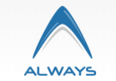

Currently, I am pursuing my masters in computer science at University of Texas at Dallas.
Here I am specializing in Data Sciences. I am also a Research Assistant at Creative Automata Labs in my campus.
I have almost 2.5 years of professional experience and still enjoy the challenges it bring in.
I have done several projects that included devloping MEAN stack applications, API development, developing cloud applications, automating Devops Pipeline.
In the course of my career, I got myself certified as AWS certified Cloud Developer and AWS certified Machine Learning Specialist.
My career goal is to be great computer scientist whose work impacts the real world.
Current Work

STEPP
It is a NSF funded reserach project.The project aims to provide simulations of physics concepts to high school students in a interactive way. I am currently working in this project as Graduate Reserach Assistance under the guidance of Dr. Kitagawa Midori.
- Developing backend service in REST & GraphQL and deploy it over AWS.
- Developing natutral language interface for simplistic interaction with STEPP.
- Technologies: Git, NodeJS, AWS Lambda, AWS SNS, REST, GraphQL, AWS DynamoDB.
Work Experience
Office of Information technology-UT Dallas
I worked at OIT as a student cloud engineer from Feb 2019 to December 2019.
- Worked with cloud team, to develop cloud automation solutions.
- Created automation script which auto shutdown and restarts virtual machine at speculated time to save almost 40% cost.
- Developed customized Unix docker image for AWS Batch, which is used to run batch jobs every month, to generate bill invoices. This saved 4-5 days of work every month by reducing the overhead of generating the invoices manually.
- Full stack Developer: Wrote & reviewed code for 5 official UTD Alexa skills, which were deployed on 156 devices in campus.
- Cloud Consultant: Provided consultancy to researchers for transitioning of their project on cloud.
- Technologies: Git, NodeJS, Python, AWS Lambda, AWS SNS, JIRA, AWS Batch, EC2, Elastic Search, Logstash, Kibana, MySQL.
Tata Consultancy Service
I worked at TCS as a System Engineer from Nov 2016 to Dec 2018.
- Led and shipped Medibot-A digital assistant (Chatbot) to assist both doctors and patients on Pfizer medicines.
- Worked on cloud formation templates and automation shell scripts to replicate infrastructure on multiple development environment, as part of infrastructure as code devOps policy in our team. This has provided the reusability of this application code for other projects and client.
- Wrote and reviewed code for various MEAN stack applications, REST API Services, R&D.
- Web Trainer- Provided 3-6 training sessions to fellow colleagues on NodeJS, AWS and MEAN stack.
- Open source contributor-Raised issue on GitHub for finding bugs in AWS SAM model and provided suggestions to fix them.
- Technologies: Git, Nodejs, Java, python, ReactJS, AngularJS, Jenkins, MongoDB, AWS Lambda, AWS LEX, Microsoft LUIS, shell scripting, Handlebar, ExpressJS, AWS EC2, AWS API Gateway, REST, Web Push Notifications.

Always Infoserve private Limited
I worked at Always Infoserve as a software developer intern from June 2016 to Oct 2016.
- Worked on creating bank database and developed secured API services on REST for the same, to serve frontend web application in MVC.Net.
- Integrated payment API in the backend.
- Technologies: C#, REST, SOAP, MS Azure.